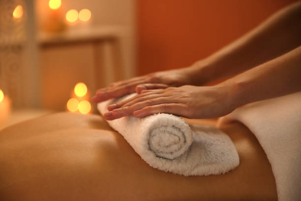

Discover the Secret to Ultimate Stress Relief with Aromatherapy Massages in Fort Lauderdale
Posted by on 2024-06-03
In today's fast-paced and hectic world, stress has become a common problem for many people. Whether it's due to work pressures, personal issues, or just the demands of everyday life, stress can take a toll on both our physical and mental well-being. That's why it's important to find effective ways to manage and alleviate stress in order to maintain a healthy balance in our lives.
One popular method of stress relief that has been gaining attention in recent years is aromatherapy massages. Aromatherapy is the practice of using essential oils extracted from plants to promote healing and relaxation. When combined with massage therapy, aromatherapy can provide a powerful tool for reducing stress and promoting overall well-being.
If you're looking for the ultimate stress relief experience, consider trying an aromatherapy massage in Fort Lauderdale. This coastal city in Florida is known for its beautiful beaches and laid-back atmosphere, making it the perfect setting for relaxation and rejuvenation.
During an aromatherapy massage, your therapist will use a blend of essential oils that have been specifically chosen to help reduce stress and promote relaxation. These oils are applied to your skin through gentle massage techniques, allowing their healing properties to be absorbed into your body.
The soothing scents of the essential oils combined with the therapeutic touch of the massage can help calm your mind, relax your muscles, and release tension throughout your body. As you sink into a state of deep relaxation, you'll feel your worries melt away and your stresses fade into the background.
Not only does aromatherapy massage provide immediate relief from stress, but regular sessions can also have long-lasting benefits for your overall health and well-being. By incorporating this holistic approach into your self-care routine, you can improve your mood, boost your energy levels, and enhance your quality of life.
So if you're ready to discover the secret to ultimate stress relief with aromatherapy massages in Fort Lauderdale, book a session today and experience the transformative power of this ancient healing practice for yourself. Your mind, body, and spirit will thank you for it!